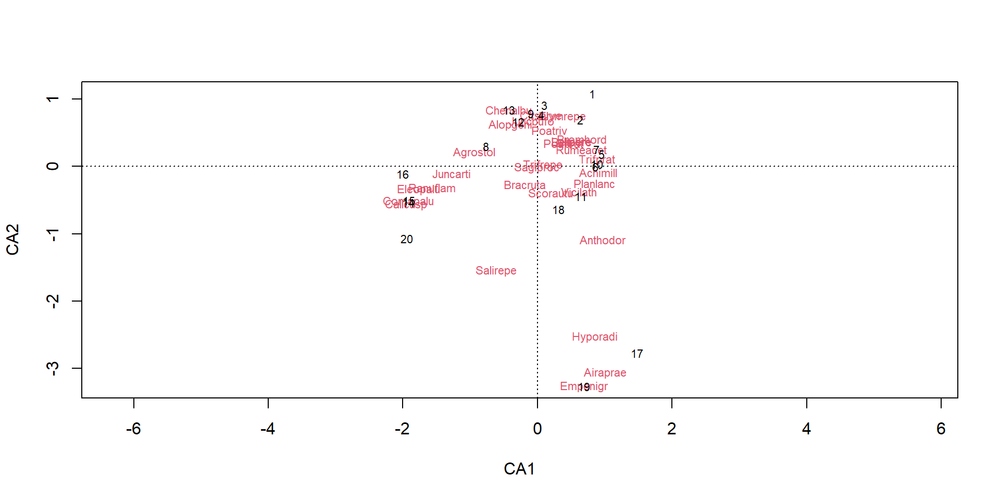
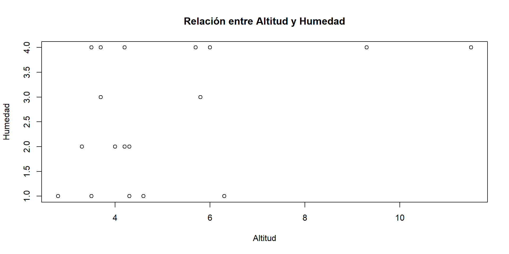

Reforestación arbórea: ¿Entender a una especie o a un ecosistema?
Una comparativa entre la regresión logística y CCA
Autores
- Rodrigo Basaldud
- Brenda Ramirez
- Seani Rodríguez
Junio 2026

Motivación
Supongamos que la Comisión Nacional Forestal (CONAFOR) desea identificar qué especies de arboles tienen mayor probabilidad de establecerse en distintas regiones del país para apoyar diferentes programas de reforestación y restauración ecológica.
Se cuenta con información de cientos de sitios distribuidos en bosques templados del centro de México, donde se registró:
- Altitud.
- Precipitación anual.
- Temperatura media.
- Pendiente del terreno.
- pH del suelo.
Además, para cada sitio se registró la presencia o ausencia de especies como:

Pinus montezumae

Pinus hartwegii

Quercus rugosa

Quercus laurina
Una pregunta inmediata antes de comenzar a plantar podría ser:
Dadas unas condiciones ambientales específicas, ¿Qué especies pueden establecerse con mayor facilidad?
Aparentemente podríamos identificar especies que son típicas de climas o regiones específicas, y con base en ese conocimiento comenzar con el programa de reforestación.
¿Cuál es la dificultad de este problema?
Hay una relación de dependencia entre especies que no se debe ignorar, además en países megadiversos como México, pueden existir distintos ecosistemas en regiones “cercanas”.
Por ejemplo:
Algunas especies tienden a compartir ambientes similares (p.ej. especies de alta montaña).
La presencia de una especie puede influir en la presencia de otra (p.ej. especies que compiten por recursos o que tienen relaciones de facilitación).
Estados como Oaxaca tienen una gran diversidad de ecosistemas, y analizar un ecosistema a la vez puede perder de vista el panoráma completo.
Con lo anterior, el dilema que busca explorar esta presentación:
Si el objetivo es predecir la presencia de especies arbóreas en los bosques mexicanos, ¿es preferible construir un modelo específico para cada especie o un modelo que contemple la biodiversidad de un ecosistema?
Afortunadamente, es una discución que ya se ha hecho…
Esta misma cuestión fue estudiada por Guisan, Weiss y Weiss (1999), quienes compararon un GLM (regresión logística) y CCA para la predicción de distribuciones de plantas.

Hay algunos detalles importantes:
- ¿Por qué comparar un modelo que sí está hecho para predecir contra un modelo que está hecho para entender perfiles y estructuras?
- Si bien, el título suguiere una competencia entre modelos, la verdadera discución es acerca cuándo conviene escoger cada enfoque, y para ilustrarlo se propone un respectivo representante.
- No tiene por qué limitarse a comparar un GLM (regresión logística) contra CCA, sin embargo la regresión logística es un modelo cómodo y el CCA nace naturalmente en el contexto de la ecología.
A continuación, introducciremos ambos enfoques y sus modelos.
Enfoque 1: Especie por especie
Un técnico forestal podría argumentar:
“Pinus hartwegii no responde al ambiente de la misma forma que Quercus rugosa. Cada especie debe estudiarse individualmente.”
Entonces se ajusta un modelo para cada especie:
- Un modelo para Pinus montezumae.
- Otro para Pinus hartwegii.
- Otro para Quercus rugosa.
- Etc.
Un modelo conocido: Regresión Logística
Para una especie particular, por ejemplo Pinus hartwegii, cada sitio puede clasificarse como:
- Presencia (\(Y=1\))
- Ausencia (\(Y=0\))
La pregunta ahora es:
¿Cómo cambia la probabilidad de presencia de la especie cuando cambian las condiciones ambientales?
Por ejemplo:
- ¿La probabilidad aumenta con la altitud?
- ¿Disminuye cuando la temperatura es muy alta?
- ¿Existe una combinación favorable de precipitación y pH?
Supongamos que observamos cientos de sitios y para cada uno conocemos su altitud, temperatura, precipitación, pH, así como si la especie estuvo presente o ausente.
Este modelo busca aprender una relación entre:
\[ \text{Condiciones ambientales} \longrightarrow \mathbb{P}(\text{Presencia de una especie en la región}) \]
La regresión logística modela la probabilidad de presencia de una especie mediante
\[ P(Y=1\mid x_1,\ldots,x_p)= \frac{e^{\eta}} {1+e^{\eta}} \]
donde
\[ \eta= \beta_0+ \beta_1x_1+ \beta_2x_2+ \cdots+ \beta_px_p \]
y las variables \(x_1,\ldots,x_p\) representan las características ambientales del sitio.
La función logística transforma cualquier combinación de variables ambientales en una probabilidad entre 0 y 1.
Esto permite interpretar directamente el resultado del modelo:
- Valores cercanos a 0 indican baja probabilidad de presencia.
- Valores cercanos a 1 indican alta probabilidad de presencia.
- Valores intermedios reflejan incertidumbre.
Efecto de las variables ambientales
Cada coeficiente describe cómo una variable ambiental afecta la probabilidad de presencia de la especie.
Por ejemplo:
- \(\beta_{\text{altitud}}>0\) podría indicar preferencia por zonas altas.
- \(\beta_{\text{temperatura}}<0\) podría indicar preferencia por ambientes fríos.
- \(\beta_{\text{precipitación}}>0\) podría indicar afinidad por sitios húmedos.
Entonces si \(\beta_{altitud} > 0\), un sitio con gran altitud podría recibir una probabilidad alta para la presencia de Pinus hartwegii.

Evaluación predictiva
Una ventaja importante de este enfoque es que como la variable respuesta es binaria (\(Y \in \{0,1\}\)), entonces las probabilidades estimadas pueden transformarse en predicciones de presencia o ausencia mediante un umbral.
Esto permite utilizar métricas de desempeño predictivo como:
- Accuracy.
- Sensibilidad.
- Especificidad.
- Curvas ROC.
- AUC.
Desventajas
Enfoque 2: Ecosistema como un todo
Un ecólogo podría responder:
“Los bosques mexicanos son ecosistemas complejos. Las especies no aparecen de manera aislada, sino que coexisten y hay una relación de entre ellas.”
Desde esta perspectiva, se busca un modelo que logre capturar las relaciones entre las especies y su respuesta conjunta al ambiente.
Esto permite modelar:
- Varios ecosistemas de una misma región.
- Encontrar gradientes ambientales en común para distintas especies.
Análisis de correspondencias ... ¿canónicas?
Antes de dar la definición del modelo, las preguntas que lo motivan son:
- ¿Cómo resumir la información ambiental de cientos de sitios?
- ¿Cómo resumir patrones de coexistencia entre especies?
- ¿Cómo relacionar ambas cosas simultáneamente?
Respondamos cada una.
Variables ambientales
Si tenemos disponible variables ambientales de diversos sitios.
| Sitio | Temp. | Precip. | Humedad | Altitud |
|---|---|---|---|---|
| 1 | 22 | 800 | 35 | 1200 |
| 2 | 18 | 1200 | 60 | 1800 |
| 3 | 15 | 1500 | 80 | 2400 |
- Generalmente las variables suelen estar correlacionadas (a mayor precipitación, también hay mayor humedad).
- Se trabaja con un conjunto de datos de dimensiones altas (muchas variables ambientales).
Análisis de Componentes Principales (PCA)
Idea geométrica
Nuestros datos son puntos en \(\mathbb{R}^{3}\), sin embargo parece que las variables actuales no explican una buena proporción de la variabilidad.
Componentes principales
El PCA construye nuevas variables a partir de combinaciones lineales de las variables disponibles, que expliquen la mayor proporción de varianza de los datos.
\[ Z_j = a_1X_1+a_2X_2+\cdots+a_pX_p \]
La estimación de los coeficientes \(a_i\) (pesos) se realiza mediante un problema de maximización iterativo:
Sea \[ \mathbf{a}_i= \begin{pmatrix} a_{i1}\\ \vdots\\ a_{ip} \end{pmatrix} \]
Y definamos el i-ésimo componente principal como
\[ z_i=\mathbf{a}_i^{\top}\mathbf{x}. \]
Se busca encontrar \(\mathbf{a}_i\) tal que maximice la varianza de \(z_i\) ,
\[ V(z_i) = V(\mathbf{a}_i^{\top}\mathbf{x}) = \mathbf{a}_i^{\top}\Sigma \mathbf{a}_i, \]
Sujeto a las restricciones
\[ \mathbf{a}_i^{\top}\mathbf{a}_i = 1, \]
\[ \operatorname{Cov}(z_j,z_i) = \operatorname{Cov}(\mathbf{a}_j^{\top}\mathbf{x}, \mathbf{a}_i^{\top}\mathbf{x}) = \mathbf{a}_j^{\top}\Sigma \mathbf{a}_i = 0, \qquad j=1,\ldots,i-1. \]
Es decir, los componentes principales tienen correlación cero y son combinaciones lineales que reflejan la máxima variabilidad posible una vez considerando las componentes principales que le preceden.
Pero… El PCA está diseñado para variables continuas.
¿Qué ocurre cuando nuestros datos son abundancias (frecuencias) de especies?
Matriz de especies
Supongamos que ahora tenemos información acerca de la abundancia de especies en distintos sitios y nos interesan los perfiles de cada especie.
| Sitio | Pino | Encino | Oyamel | Cedro |
|---|---|---|---|---|
| 1 | 5 | 1 | 0 | 0 |
| 2 | 3 | 2 | 0 | 1 |
| 3 | 0 | 1 | 8 | 0 |
El PCA deja de ser la herramienta ideal.
Análisis de Correspondencias (CA)
El CA está diseñado para tablas de abundancias.
Trabaja con la matriz de frecuencias relativas:
\[ P=\frac{N}{n} \]
donde
- (N) es la matriz de abundancias.
- (n) es el total general.
Distancia Ji-cuadrado
El CA utiliza la distancia:
\[ d(i,j)= \sqrt{ \sum_k \frac{ \left( \frac{p_{ik}}{r_i} - \frac{p_{jk}}{r_j} \right)^2 } {c_k} } \]
donde
- \(r_i\) son masas de filas.
- \(c_k\) son masas de columnas.
Interpretación del CA
El CA permite representar en un espacio de baja dimensión de forma simultanea:
- Sitios
- Especies
Sitios cercanos poseen composiciones similares.
Especies cercanas tienden a aparecer juntas.
CA en R

Pero aún falta algo
El CA describe patrones de especies.
No explica por qué aparecen esos patrones.
Necesitamos incorporar información ambiental.
Análisis de Correspondencias Canónicas (CCA)
El CCA combina:
- La ordenación de especies obtenida por CA.
- Variables ambientales explicativas.
Relación entre los métodos
PCA:
\[ \text{Ambiente} \rightarrow \text{Gradientes ambientales} \]
CA:
\[ \text{Especies} \rightarrow \text{Patrones de composición} \]
CCA:
\[ \text{Ambiente y Especies} \rightarrow \text{Patrones de especies explicados por ambiente} \]
Formulación del CCA
Sea \(Y\) la matriz de especies y \(X\) la matriz de variables ambientales.
El CCA busca ejes canónicos obtenidos al restringir la ordenación de especies a combinaciones lineales de
\[ X\beta. \]
Interpretación ecológica
Cada eje canónico representa un gradiente ambiental.
Por ejemplo, el primer eje puede ser asociado al gradiente:
Y el segundo puede ser asociado a:
Las especies se ubican según su asociación con cada gradiente.
Mensaje final
| Método | Datos | Objetivo |
|---|---|---|
| PCA | Variables ambientales | Encontrar gradientes ambientales |
| CA | Matriz de especies | Encontrar patrones de composición |
| CCA | Especies + ambiente | Explicar la composición mediante gradientes ambientales |
El CCA puede interpretarse como una extensión del CA donde los ejes están restringidos por variables ambientales.
Por ello es una de las herramientas más utilizadas para estudiar cómo los gradientes ambientales estructuran las comunidades ecológicas.
Grafica CCA

Comparación de enfoques
| Método | Ventajas | Desventajas |
|---|---|---|
Regresión logística |
Fácil interpretación de los efectos de cada variable, estimación de probabilidades. | Analiza una especie a la vez y no describe la comunidad completa. |
CCA |
Analiza comunidades completas y relaciona especies con cambios ambientales. | Interpretación más compleja y no estima probabilidades. |
Ejemplo práctico: Dune
Usaremos el dataset Dune y Dune.env de la paquetería vegan, que contiene datos de abundancia de especies en 20 sitios, junto con variables ambientales como altitud, humedad y pH del suelo.

Prueba codigo animado
- De la paquqteria
vegan - Ejemplo con el dataset
Duneque contiene datos de abundancia de especies en 20 sitios.
Prueba codigo animado 2
- De la paquqteria
vegan - Ejemplo con el dataset
Duneque contiene datos de abundancia de especies en 20 sitios.
Prueba codigo con salida
A1 Moisture Management Use Manure
1 2.8 1 SF Haypastu 4
2 3.5 1 BF Haypastu 2
3 4.3 2 SF Haypastu 4
4 4.2 2 SF Haypastu 4
5 6.3 1 HF Hayfield 2
6 4.3 1 HF Haypastu 2

Facultad de Ciencias, UNAM